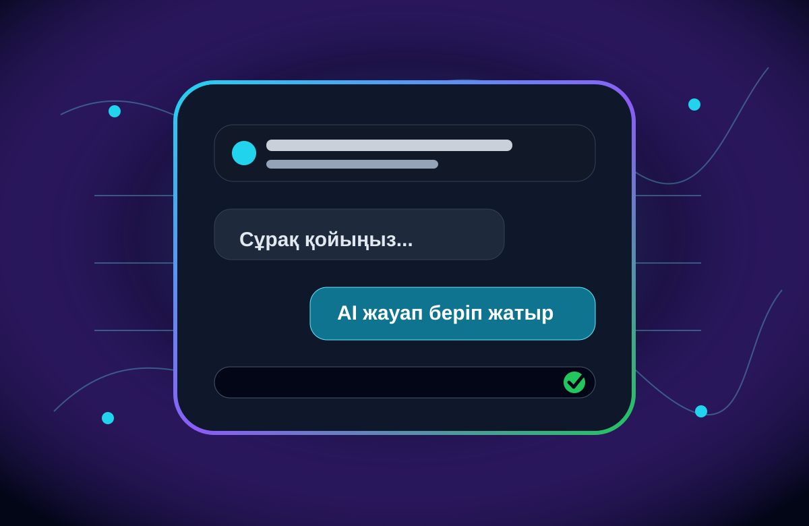

01
AI чат
Сұрақ жазуға, дайын prompt таңдауға және жауап алуға болатын интерактивті бөлім.
Бұл жоба жасанды интеллект тақырыбындағы заманауи веб сайт. Ішінде ChatGPT сияқты чат интерфейсі, жылдам сұрақ батырмалары, демо жауап беру жүйесі, суреттер, аудио, видео және кері байланыс формасы бар.

Сайт ChatGPT сияқты интерфейсті көрсетеді, бірақ GitHub Pagesта APIсыз жұмыс істейтін қауіпсіз оқу жобасы ретінде жасалған.
Пайдаланушы сайтқа кіріп, жасанды интеллект туралы ақпарат алады, AI чат бетінде сұрақ жазады және демо көмекшінің жауабын көреді.
Жоба HTML, CSS және JavaScript арқылы жасалды. Қосымша сервер қажет емес, сондықтан GitHub Pages арқылы бірден жариялауға болады.
Талаптардың бәрі сақталған және тақырыпқа сай технологиялық дизайн қолданылған.
Сұрақ жазуға, дайын prompt таңдауға және жауап алуға болатын интерактивті бөлім.
AI тақырыбына сай үш сурет, бір аудио және бір бейнефайл қосылған.
Кері байланыс бетінде жұмыс істейтін форма және хабарлама растауы бар.
JavaScript сұрақ ішіндегі негізгі сөздерді анықтап, алдын ала дайындалған түсінікті жауап береді.